# 没人能计划科研
来源知乎，作者酱紫君
易研丁真，鉴定为《文明》游戏玩多了
苏味入脑人总觉得科研是可以被计划的，科研有个科技树亮出来给你攀科技，所以只要招一百万科研牛马去抗塔冲线就行。
实际上科研 buff 都是在野区刷出来的，在莫名其妙的地方开出莫名其妙的花。
二战元首怎么不 all in 原子弹呢？科技树上没标出来吗？下一个时代的解锁条件都不看的吗？
元首真是穿越者，整个东线不要了也得搞出来，怎么一个小小的海森堡就能动摇元首的道心？
计划科研下，就算投入一百万科研人，一万亿科研经费，非常有可能科研进度是 0。
经费都被关系户贪污了，这还算是好事，最糟糕的情况在于科研进度搞不好会变成负的。
不小心再造一个李森科二世你就偷着乐吧，一看宏伟蓝图遥遥领先，放到国际上科技小丑。
如果要岁月史书强行割裂游戏和 AI，建议让黄仁勋先把 GPU 改名为 APU。
以示自己英明神武，一开始就预见了 AI 浪潮，少走三十年弯路。
苏联科技全面落后，早已证明没有人能计划科研，科技树这东西等同于神谕，现实中是不存在的。
AlexNet 大放异彩前你在干嘛呢？哦，在那花式调你那 HOG+SVM，CNN 教科书上没写吗？
Stable Diffusion 横空出世前你在干嘛呢？哦，在那 GAN 来 GAN 去，diffuser 是什么新思想吗？
GPT 做冷板凳的时候你在干嘛呢？哦，在那瞎改 BERT 水论文，谷歌出的准没错，GPT 论文你看了没？
人家一创新就一片死寂，完了完了，抄错了。
等你抄明白了你又在那发展迅猛，既要又要。
你咋这么贱呢？
之前金融什么名声，金融误国？
反正和游戏一样都是害群之马，全毙了没一个冤枉的。
现在搞出了 DeepSeek，又成了国产之光，又要大力发展。
只要能赢，标准都是可以灵活转换的是吧？
现在的你看不起 RWKV，说人家民科。
过几年要是成了，我估计都要被吹成国产道祖了。
鄙人没什么才能，平生没证明过什么大定理，没为深度学习的第一性原理做过一丝一毫的贡献。
也就排除过几个错误方向，唯愿化作综述上的一句话，参考里的一行引用，节省未来打开深度学习黑箱的天才一盏茶的时间。
你若问我科研路在何方？
那我会告诉你，科研就是趟尸，没有尸体的地方，就是路。
学海无光，碑林作灯。
一篇篇论文，不是什么丰功伟绩，不是什么值得传颂后世的史诗大捷。
只是一块块科研墓碑罢了。
只有排除了所有错误方向，最后剩下的路才是真正的通途。
普朗克量子假说，玻尔量子论，索末菲量子模型，导航波理论，隐变量理论……
这些你又知道多少呢？
众多学说竞争，最后才有了薛定谔和海森堡建立的量子力学。
千千万万科研人，只有把路走绝了，才能找到真正的大道通途，这才是科研进步的真相。
而你的爹味设计，今天禁止这个，明天禁止那个，一张纸就干掉一整个行业。
我看这个好，就都给我去研究这个，到时候，研究不出是你们能力不足，研究出来都是我英明神武，先见之明。
学海不语，只是默默记录，你的所作所为都会化作后世社会学研究的注脚。
是非功过，自有后人评说。
# 两个条件
来源爱因斯坦的完整名言（1953 年 4 月 23 日致 J.S. 斯威策的信）
西方科学的发展是以两个伟大的成就为基础：
-
希腊哲学家发明形式逻辑体系（在欧几里得几何中）
-
以及（在文艺复兴时期）发现通过系统的实验可能找出因果关系。
在我看来，中国的贤哲没有走上这两步，那是用不着惊奇的。作出这些发现是令人惊奇的。
# 登月与文明
来源知乎文章，作者池鱼
登月其实是个非常好的体现科技传承难度和低科技整狠活的例子
登月阴谋论虽然起源于红脖子，但其在简中上的兴起其实是一直以来西欧中心史观的回旋镖
关键在于他们长期灌输给大众的两个错误认识：
# 传承很难
人类科技水平不是线性平滑上升，大部分人对科技传承链条的脆弱程度一无所知
因为我们的历史课，灌输的一直是线性的发展观，“奴隶－封建－资本主义－社会主义－共产主义”。这种线性且必然的历史发展路径，就会推导出：
老中清末发展了两千年还那个鬼样子，以前只会更差；
古希腊古罗马科学一脉相承，欧几里得、亚里士多德的巨著流传几千年毋庸置疑
然而给大家搬点其他大佬的内容
这是漢代的斜织机和两宋的立织机
作者：知乎，卧地马鸭
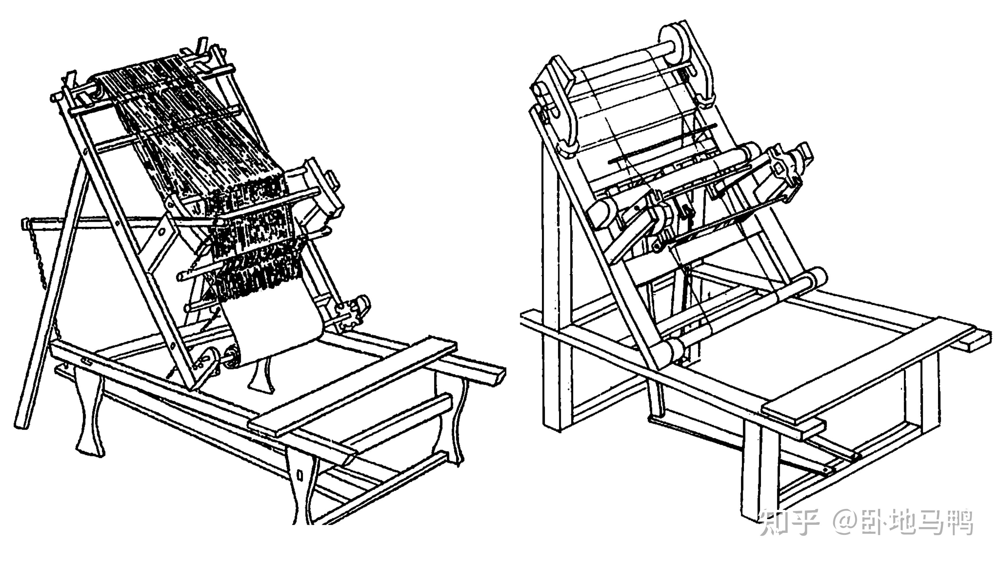
这个看起来像是公元十几世纪才出现的某种机械，叫作 “踏板织机” ，因其经面与水平机座呈 50 至 60 度的斜角，又被称作 “斜织机”。其能以多条踏板联动控制综片升降，主要用于生产平纹素织物。
而这台机械，实际被发明于公元前 5 世纪的战国时期，普及于公元前 2 世纪的西汉时期。
《木兰辞》里 “不闻机杼声” 的 “机杼”，就是指这个东西。
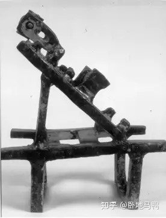
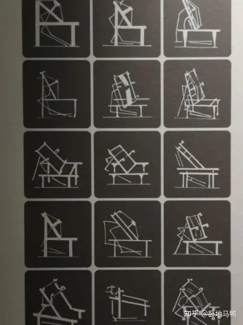
中世纪盛期（High Middle Ages）大约被定为 11-13 世纪，同时期的中国正好处于两宋时期。此时，中国也出现了一种立式织机，大约被发明于五代时期（开化寺壁画），名为 “立机子”，正衍生自上文的汉代斜织机。
而中国版本的立式织机长这样：
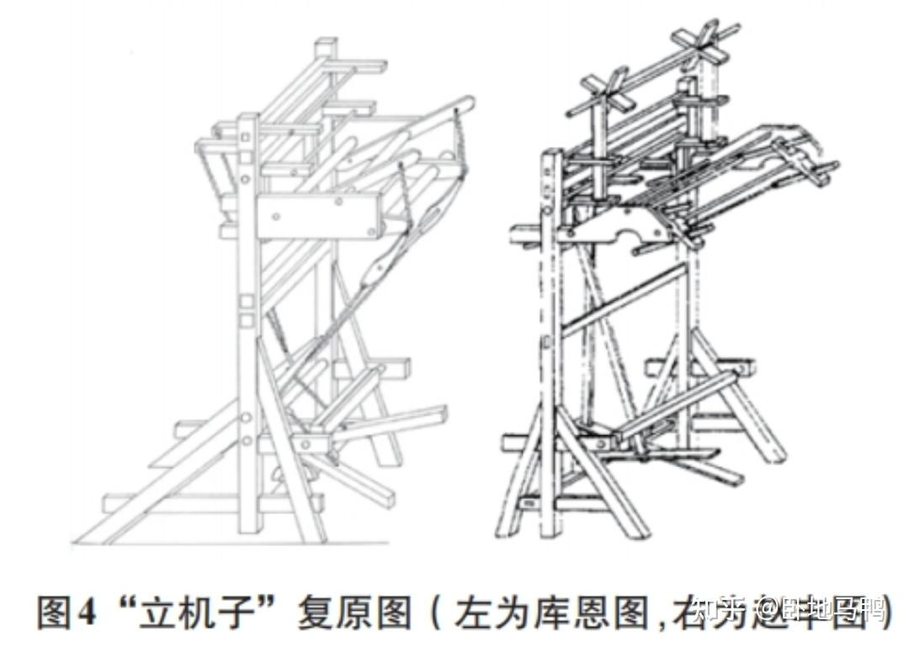
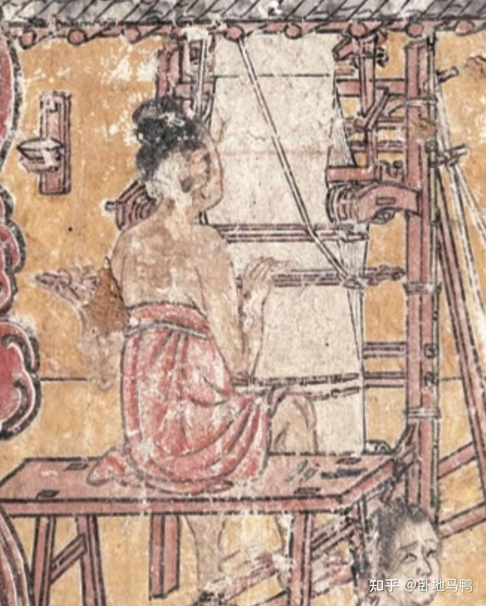
在两汉时期，由于纺织机械已经高度发达，汉朝人便开始向大型纺织机械转进，于公元前 1 世纪创造了一种大型织造机械，名为提花机。
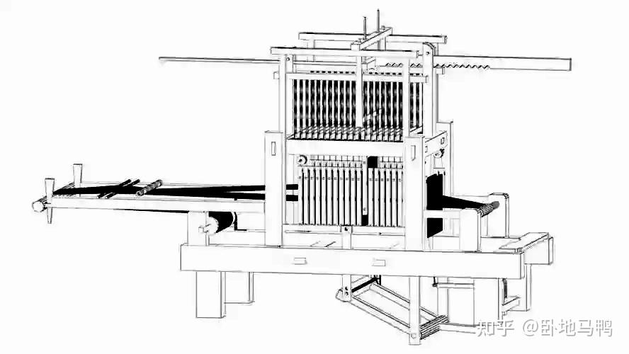
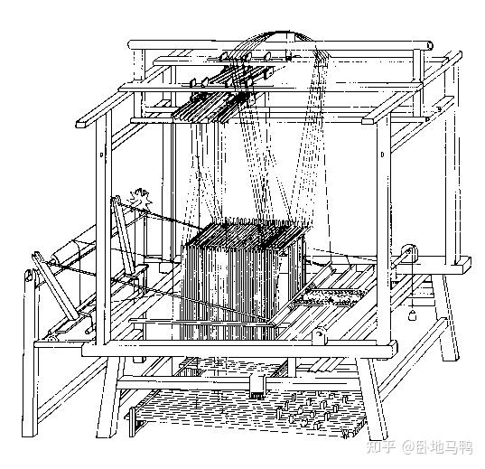
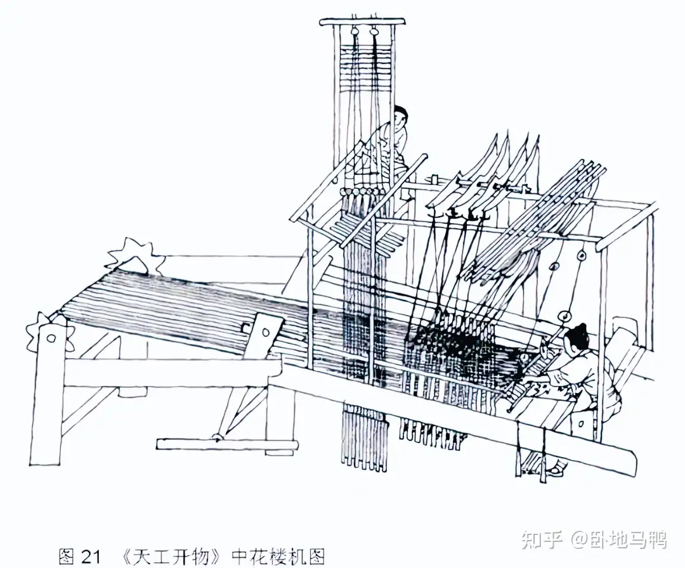
两汉黑科技提花机，简单来说他可以用花纹 “脚本” 准确无误地缝上大面积花纹，也能让从没学过此纹样的人直接缝出同样的花纹，只要接上 “花本” 按流程操作就行了；
甚至，提花机的工作原理，还被认为与二进制计算机的原理类似。编织前先以线制花本贮存提花程序 ，相当于预制绘图，再用衢线牵引经丝，可组合织出足足数百种复杂纹样。
到了宋元时期，中国人已经不满足于人力驱动的小型织机，元代《王祯农书》中就记载了一种巨型纺织机械，名为 “水转大纺车”，其创制于 12 世纪中期的南宋，机械本体足足有 32 枚锭子，可日产数百斤麻纱布匹。
简单说就是水力纺车，自动挡。
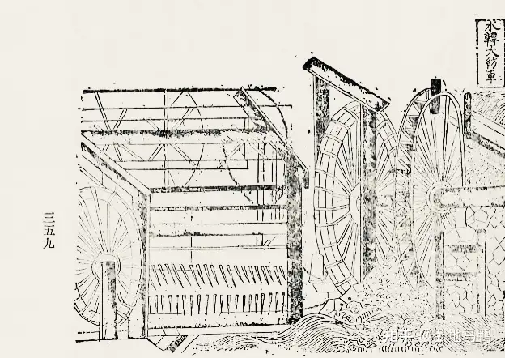
这种例子还有汉代卡尺：
宋代瓷器也是，其中釉药体系全面失传
作者：知乎，阳阙
宋代建窑曜变盏釉面中发现 15-30 纳米氧化铁晶体有序排列，通过布拉格衍射选择性反射特定波长光线（500-600nm 蓝 / 紫色波段），产生曜变盏标志性的虹彩效应（类似孔雀羽毛、蝴蝶翅膀的结构色原理）。
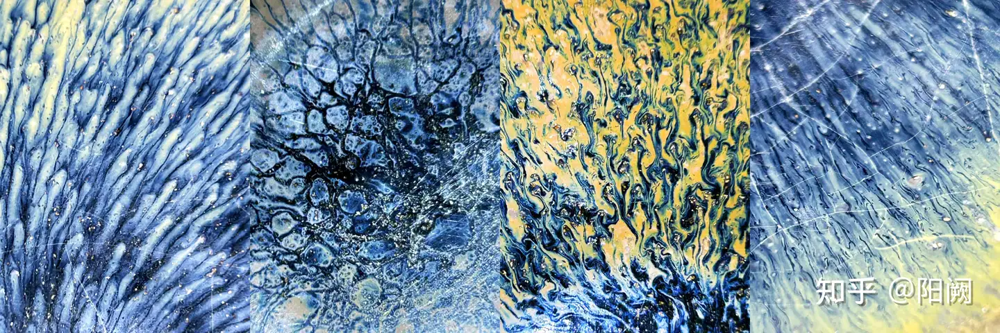
中科院利用聚焦离子束技术，在曜变斑处提取出厚度仅 197 纳米的透明层，其折射率梯度变化表明这是由 FeO 与 SiO₂交替沉积形成的布拉格反射层。当光线入射时，不同波长光波在膜层间产生干涉，形成随角度变幻的虹彩，这种效果需要膜层厚度误差控制在 ±5 纳米以内 —— 即便现代镀膜工艺也属极高难度。
台北故宫藏银兔毫盏的针状结晶，经透射电镜分析为 晶体，其形成需要窑内氧分压精确控制在 之间（《Nature》子刊研究）。
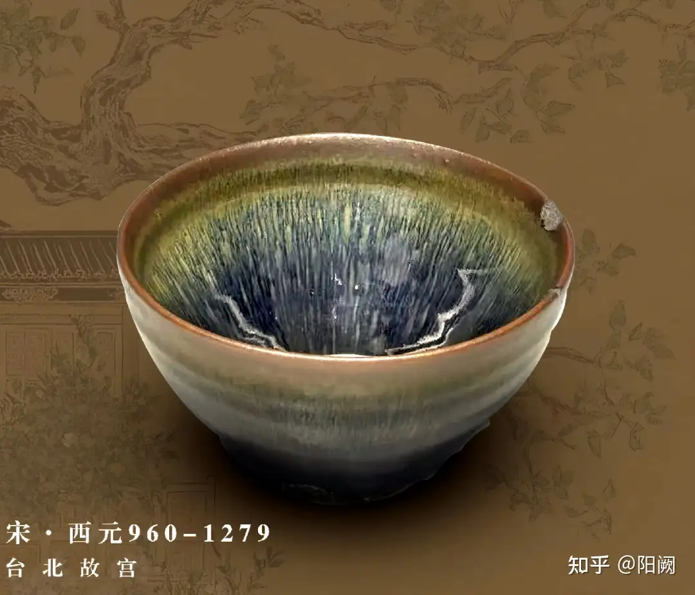
而如此高水准的工艺，在宋代完全是靠匠户的手艺人们凭借经验完成的。《天工开物》记载的「观烟辨火术」，其实就是通过烟气成分判断窑内氧化还原状态。
很多拿着自己爷爷奶奶辈老中农村的印象套到古代两千年的人来看一看，你们见过甚至听过这些玩意吗
那这些东西为啥消失了呢，甚至在挖出来石刻、实物之前大家都不知道有过这玩意呢，那你得问五胡满蒙了
其实就是：核心产区被焚毁，制作和使用的工匠被掳掠或挂了
然后就没啦，水灵灵地没了，泉州被蒙元屠戮后、扬州被鞑清屠戮后，直接变成空城，人、物、建筑设施什么都没留下，变成白地，都再也没有重现曾经的辉煌
那你猜猜辽金蒙元把黄河流域几乎变成马场无人区，八岐入关从东北到西南数百次屠城纵火，会不会恰好摧毁几个陶瓷产业核心、纺织产业核心、学术中心地区呢
你说就没有书籍记载吗，老中果然就是不重视科技
但是
与《周易》并称三易的《连山》《归藏》
儒家六经之一的《乐经》
《尚书》原版
这些都是官方显学，几乎全天下读书人都会读的
失传了
唐朝《虬髯客传》《霓裳羽衣曲》清据《红楼梦》
风靡一时的无数流行小说、乐曲
也失传了
这还是老中，一个在很长很长时间里都是最重视文字记载、识字人口最多的文明
你传抄数百数千份、传承数十代，人家一把火就没了，你带着逃亡？逃亡时是金银细软要紧还是这些大部头要紧？路上颠簸风吹日晒偶遇山贼，到异乡了没钱再盖藏书阁，子孙后代不识字了把那玩意当柴火点了
那不就没了吗，就是没了呀，物理意义上的消失了，除非后世挖出随葬的，不然就永远消失了
西欧也一样，古罗马好歹还算有点农耕技术（虽然跟漢朝比不了），但是中世纪相当长的时间里
他们连施肥都不会了
字面意义上的靠天收，铁质农具没有，轮作没有，垄耕没有，除草没有，育种没有，通通没有
顶多知道要洒点水，剩下的交给天意，最后收割了麦子去农场主领主那里，付费磨成面粉烤成面包 —— 要付费，因为就那一个磨坊或烤炉，你私自盖是违法的，疯哥你自己琢磨琢磨普通农奴吃不吃的起香香软软的新鲜面包
甚至很多是休耕制，种植一波后土壤肥力下降，就放在那荒废一年，过一年再种
你猜欧洲为什么那么多牧场，因为种地的收益真就那样
你猜为什么欧洲那么多原始山林没开发，因为人口和大型工程能力真的拉，开荒基本靠逃亡散户，建立大规模水利设施、组织大量平民迁居开荒几乎不可能
所有人都对古希腊的雕塑、壁画耳熟能详，都不用我贴了
然而中世纪画风是这样的
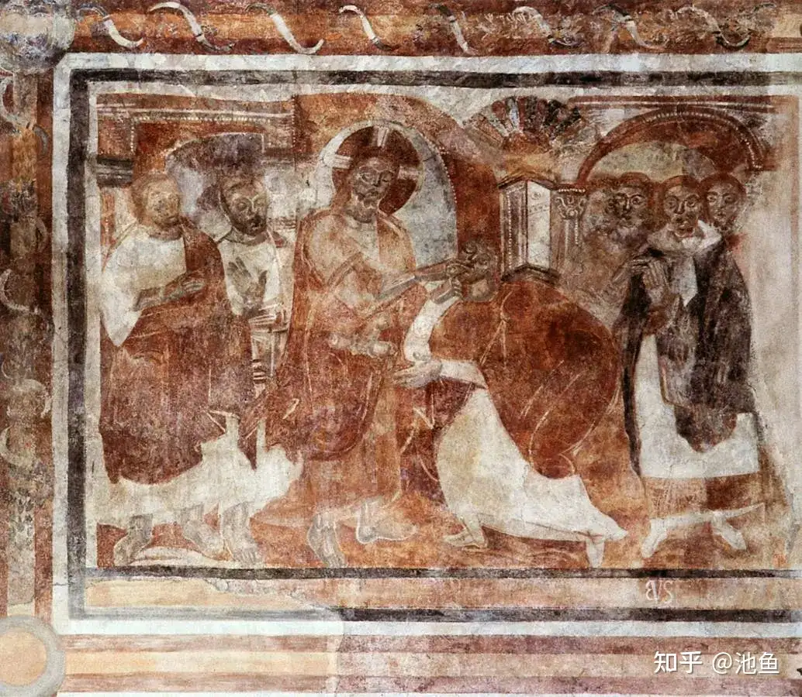
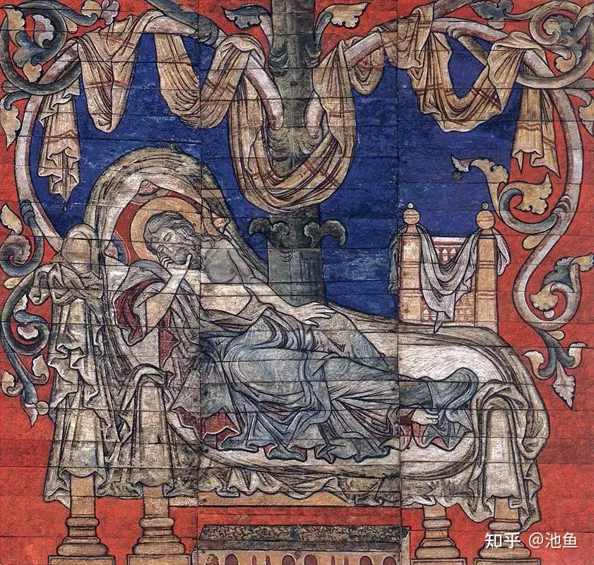
这玩意你真的别跟我扯什么透视什么人体了，哥们真学过两年素描，第二张乍一看感觉还不错吧布褶子画的挺认真，你瞅瞅那几个床脚呢，平行等大小地往那一垛，有透视吗
然而这才是人类历史的常态，你说一千道一万，东西和掌握的人物理层面消失了，就是没了
放在今天也没什么不同，登月就是这样，当年的企业没了，各种重要文件、数据记录鬼知道还在不在某个角落，技术工人也没了，退休了挂了
那就是没了嘛，你怎么复现嘛
# 古人不笨
第二个常见误区：严重低估古人在低理论水平下靠经验积累整狠活的能力
是某些人天天上升到 “力学”“数学” 的回旋镖，动不动把两千年前的玩意等价于现代科技
比如我每次必拷打的，某些人最津津乐道顶礼膜拜的大教堂（自己搬运一下自己）
我们就按发展时间来看，先是古罗马万神殿，某些人梦开始的地方，大家先自己找找有什么亮点
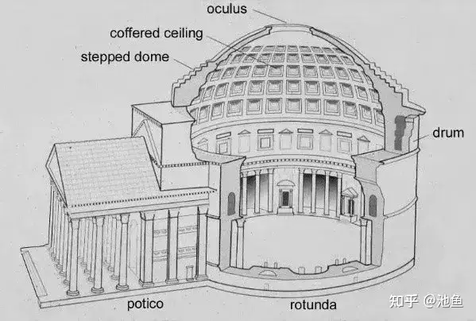
它的侧墙相比于穹顶是不是显得特别厚
因为它有五到六米厚
某些人整天复读的侧向推力嘛，穹顶会把重力转化为侧向的力，就会把侧墙 “推” 倒，古人又不是看不见，那不就加厚加重呗，不信挡不住你
然后问题来了，采光不行，神的居所怎么能没有光呢
怎么办？挖洞再搞个拱顶
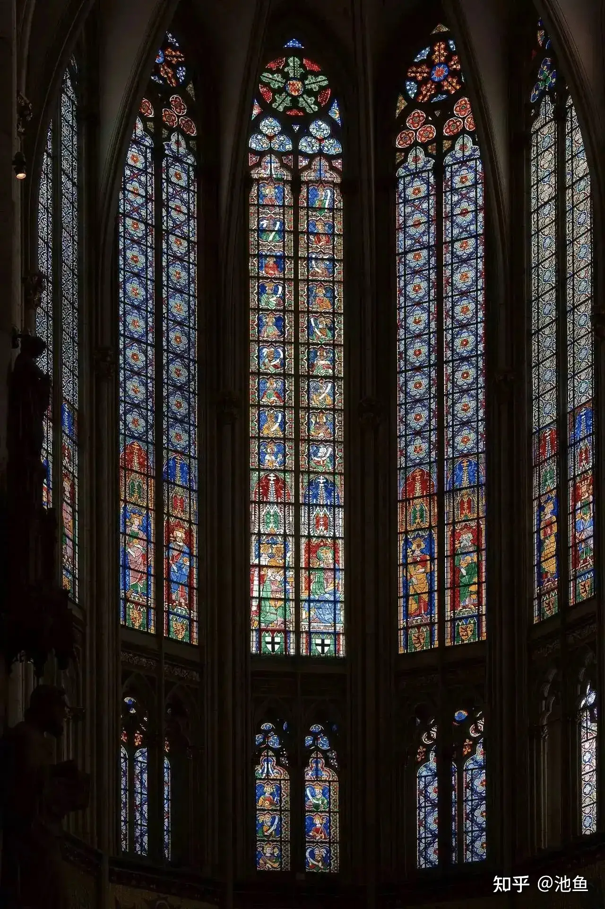
你看大教堂的这些大开窗有几个顶框不是拱形
新问题：剩下的侧墙得盖更厚更重了
那就在侧面再挖洞再造拱 ——
12 世纪至 16 世纪间，飞扶壁在哥特式建筑中得到了蓬勃发展，成为这一时期建筑设计的标志性元素之一。这一建筑风格以高耸入云的尖塔、尖拱和飞扶壁而闻名，而飞扶壁则因其能够有效平衡拱顶对墙面的侧向推力而得到广泛应用。
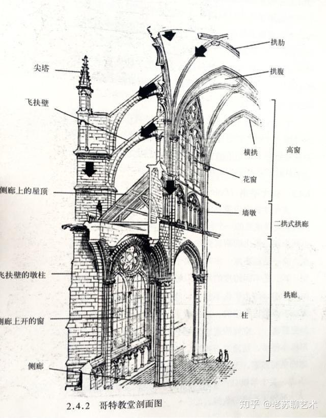
随着建筑技术的不断演进，飞扶壁的结构形式和用途也发生了显著变化。在哥特式建筑中，飞扶壁不仅用于大型教堂等宗教建筑中，还逐渐被应用于其他类型的建筑，如城堡、宫殿和大堂等。这一趋势反映了建筑技术在民用建筑中的普及。
咦这不是大名鼎鼎的飞扶壁吗，对啊这就是飞扶壁啊，侧墙太厚了就再挖再搭嘛，就不影响采光了啊
那这玩意又靠什么 “抵住” 呢，盖个塔楼呗，反正已经离大厅够远了不影响采光了，盖的高高大大的，所以本质上那个大穹顶，是周围的塔楼通过飞扶壁之类的结构 “夹住” 的。
其他其实就没什么好说的了，窗户开大一点，飞扶壁飞远一点搞多一点……
请问大家有看到受力分析图吗
但是古人就是盖出来了，你要是科学计算肯定会发现很多地方材料明显冗余
因为古人不傻，这些穹顶不知道塌过多少回，给侧墙、飞扶壁和塔楼加料就是了
老中也一样，就上面那个宋瓷，那个 “厚度误差控制在 ±5 纳米以内” 的曜变盏，照某些人的吹法，宋朝人就已经掌握现代化工现代金相了，什么元素周期表什么置换氧化什么光学折射干涉…… 那不都得懂啊？
其实呢，唯手熟尔，百次千次的实验，宋朝人并不懂化学光学，就像古罗马人并不懂受力分析，或者说他们的理论跟近现代科学是完全不一样的
# 登月
你会问这跟登月有什么关系
因为阿波罗登月跟今天的登月也差十万八千里，也是低科学水平下的 “大力出奇迹”
就比如他们搭载软件的载体：
作者：知乎，Mandelbrot
存储器实际上是一个有很多磁环构成的阵列，电缆从阵列中穿过，以二进制机器码（0 和 1）的方式保存软件信息。下图就是阿波罗导航系统中用于测试的存储器。你可以清楚地看到红色的磁环和绿色的导线。
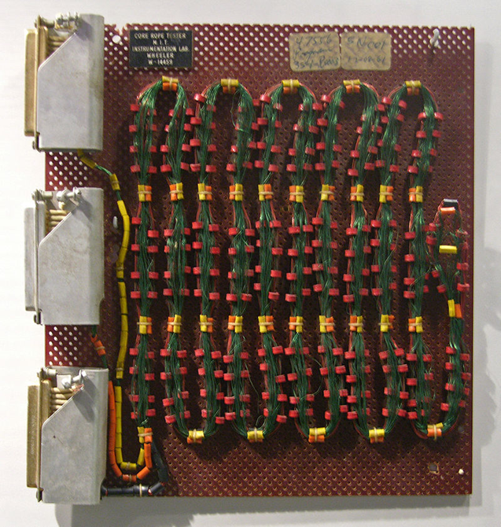
磁环的作用是改变导线上电压的状态。如果导线穿过磁环，导线上的电压就会发生改变。系统检测到这种改变后，就把这条导线上的数据解释为 1；
如果导线没有穿过磁环，那么导线上的电压不发生改变，系统就把这条线上的数据解释为 0。
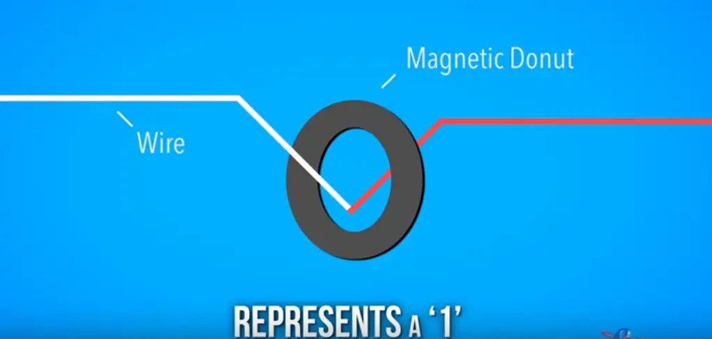
可以想象，软件写入存储器的过程实际上和织布差不多。所以，项目组雇佣了很多有经验的纺织女工，采用一种类似纺车的设备，再加上一种特别的毛衣针，一位一位地把整个软件织进了下图中这个存储器。
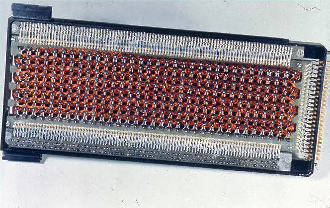
整个软件系统的大小大约是 60 万位。对于软件的大小来说，这个数字在今天已经是微不足道了。但是，把这样大小的数据用手工输入，而且不能有错，还是很不容易的。所以，整个软件输入的过程都经历了严格的测试。幸运的是，当时已经有自动软件测试的概念了。
最终，这个编织出来的程序成功地把宇航员带到了月球，并且安全的带回了家。
没你想的那么复杂，推力、路线算出来，氧气吃饭安排上，全程电磁信号联系
其实整个阿波罗最难的，一是宇航员手控软着陆的神乎其技，二是阿美动员了数万家企业、学校并把项目整合成功的能力
真真假假大家自己都有想法（我认为真），但是光这个科技含量
真不高，被二十年前吊打的程度，他今天搞不了主要是因为华盛顿已经没有这个预算和组织能力了，他现在能收上税就不错了（核心业务）
郑和下西洋也是，人家确实没有蒸汽机，确实没有北斗导航，但是人家有指南针六分仪沿线画海图，人家有足够的后勤保障海员素养，有基本的定位定向测距能力
人家就是能航过半个地球还全须全尾地回来，还来回了好几次
当然损失不多是因为没有横跨远洋，但是人家的目的也不是去寻找 “瓷器黄金之国” 啊，人家就是去勘探东南亚顺带宣示霸权的
就像阿波罗登月的主要目的也是为了跟前苏争霸一样，又不是建立月球殖民地，插旗拍照挖土完事回家
# 不败
来源抖音
生活打不败大口吃饭的人。
# 命途多舛
来源抖音，一人之下陈朵篇评论区
命途多舛，她点头说好
# 我的母亲
来源抖音，博主 @慕七七采访的农民工大爷所撰
坟头上的草青了又黄，黄了文青，就像我的念想一样，总也断不了。
我已经当了爸爸，也已经当了爷爷，但我已经三十多年没叫过妈妈了，我想着，等哪天我扛不动水泥了，就回村里挨着那堆土躺下，没准那时候，我再叫妈妈，她就能听见了。
# 新老二次元
来源 b 站
知乎有一句话看了突然醍醐灌顶：
老二次元是认为自己配不上世界，
新二次元是认为世界配不上自己。
感觉这一条能解释很多的新老二次元的观念冲突。
# 我的伤物语
来源 b 站
现在我已经不敢再看物语了，每次看到都会想到当初同样在高中时期看物语的自己，
然后联想到现实自己已经是一名 30 岁的老登就有种压抑喘不上气的感觉，时间真的是太快了
# 大石测胸口
来源 b 站
时代的聚光灯给到了丁真
于是诗人们只能描绘黑暗
# 中式空心
走出中式教育体系后，你会发现自己的人生像是被抽空一样内核是空的，成了一个空心人没有真正热爱的事物，没有发自内心想做事。即使曾经有过，也早已在漫长的规训中被一点点掐灭。
然后，你需要花费很长很长的时间去学习两件事：一是如何与优秀主义脱钩，如何接纳那个 “平庸” 的自己。二是如何重新拾起人类与生俱来，却早已遗忘的能力如何去快乐...